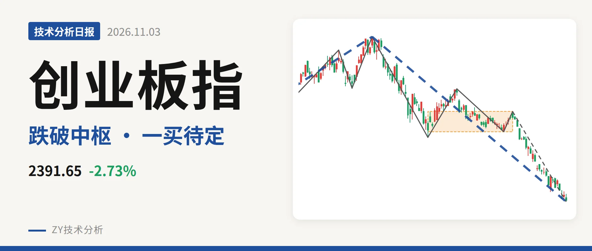
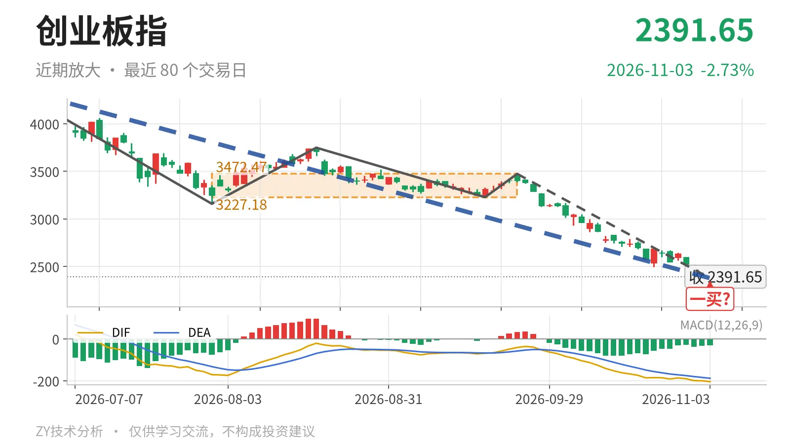

创业板指｜跌破3227点新低 一买暂定2376点

最近日线中枢 3227.18—3472.47点，收盘位于中枢之下
一句话：日线跌破最近中枢下沿，11月3日一买暂定，下跌未背驰
🌊 走势结构：上涨段还在延续，但回落已破坏大半升幅
更大级别上，2024年2月5日至2026年6月25日的上涨段涨约195.4%，还在延续；6月25日至11月3日的下跌段跌约45.7%，也在延续。日线线段中，3月9日至6月25日的上涨线段还在延续，而6月25日以来的下跌线段已将价格从4380.41点带到2376.39点。该位置低于3月9日线段三买3111.88点，说明回落不是浅调，而是打进了前上涨段结构内部。整体看，上涨结构未被终结，但当前深跌已经破坏了日线上行结构。

📍 中枢与位置：最近中枢下沿被跌破，价格回到中枢下方
最近的日线笔中枢是7月30日至9月22日形成的，区间3227.18—3472.47点，中轴3349.83点，这个中枢还没完成。最新收盘2391.65点，低于下沿约25.9%。前一个2025年5月14日至2025年6月23日的中枢中轴在2036.94点，最近中枢本已明显上移。但价格已经跌穿3227点下沿，正在破坏中枢上移结构。回到3227点上方之前，该下沿会转为反抽压力。
🅿️ 买卖点：11月3日一买暂定，线段三买被跌破
最新日线笔级别买卖点里，11月3日的2376.39点为一买，所在9月22日至11月3日的日线下跌笔还在延续，这个一买只能看作暂定的一买，会随笔的延伸而变化。线段级别上，3月9日三买3111.88点已被6月25日以来的下跌段跌破，仅对应更小级别。另外，1月13日一卖3416.84点与2月25日二卖3363.18点，两个卖点一个比一个低，但在6月25日创出4380.41点新高后，也只对应较小级别。

⚡ 背驰：当前下跌笔未形成标准底背驰
比较同向日线下跌笔，6月25日至7月30日那笔从4380.41点跌至3158.14点，绿柱面积1837，DIF低点-171.1。9月22日以来的下跌笔目前到2376.39点，绿柱面积1099，DIF低点-204.5。价格创了新低，绿柱面积暂未超过前一笔，但DIF低点继续走低，不符合“新低不新弱”。当前这笔还在延续，面积仍可能继续累积，所以当下不是标准底背驰。最新MACD的DIF为-204.5，DEA为-188.4，柱-32.2，零轴下方状态未变。
🔎 关键位置观察：反抽不回3227点则构成三卖结构
结构上偏弱，弱在最近中枢下沿被跌穿，且下跌未现底背驰。反抽若回不到3227点上方，对7月30日至9月22日中枢构成三卖，下跌结构延续。若重新站上3227点一线，下跌更可能只是中枢扩展。上方需要回到3472点附近，才能重新进入中枢内部。下方若跌破2376点暂定一买，该点只对应更小级别，下一结构参考2025年5月14日至2025年6月23日中枢上沿2077点附近。整体结构暂时偏弱。
⚠️ 本文为基于公开行情数据的缠论技术结构记录，由程序自动计算并生成，仅供学习交流，不构成任何投资建议。市场有风险，投资需谨慎。